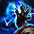
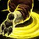
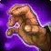

踏风武僧 PvP 判断训练器
踏风的活不是抢先手，是让对面不敢先动手。


为什么？你有一张让对面爆发变自杀的牌业报之触改变的是对手的决策，不只是你的血线▸这意味着踏风的一部分强度是威慑：对面因为忌惮而不敢开，你就白赚了一个冷却周期。反过来，把它当纯保命牌交掉是浪费——那样只挡了伤害，没换到对面的节奏。
该不该开？勾一下就知道
勾掉几条，就有多少胜算。
三个时钟
踏风的节奏挂在这三个数字上。
引导型技能，期间持续打输出。Turbo Fists（50/50 全员必带）让它顺带把所有目标减速 90%，并且引导期间你招架所有攻击。
所以怒雷破不只是伤害——它同时是控场和防御。但引导会被打断，被控住就整段作废。
把受到的伤害转成对目标的伤害。它的价值不只在挡伤害，在改变对面的决策。
所以交的时机是对面准备开爆发的那一刻，不是你血线告急的时候。血低了才交，只挡到了尾巴。

控制时钟 · 两种控制一个范围昏迷，一个单体长控▸踏风的控制不算多，所以别拿它们开场——扫堂腿留给队友的爆发窗口，分筋错骨留给需要把治疗踢出去的时候。
本版定盘（top50 三对三实测）
影踏（Shado-Pan）48/50，天神引导（Conduit of the Celestials）只有 2 人。
这条线围绕 Flurry Strikes 展开——自动攻击攒层，
Turbo Fists（50/50）——全员必带。
Ride the Wind（35/50）清减速并给队友铺路、Grapple Weapon（32/50）缴械、Wind Waker（30/50）强化位移。这三个占了第二三格的绝大多数——对面物理输出重就上 Grapple Weapon，对面靠拉扯就上 Ride the Wind。
三格 50 人 = 150 个选择，上面四项占了其中 147 个。